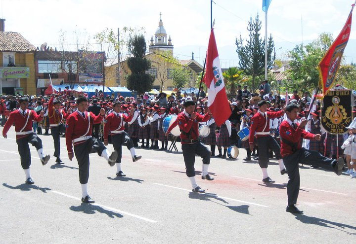
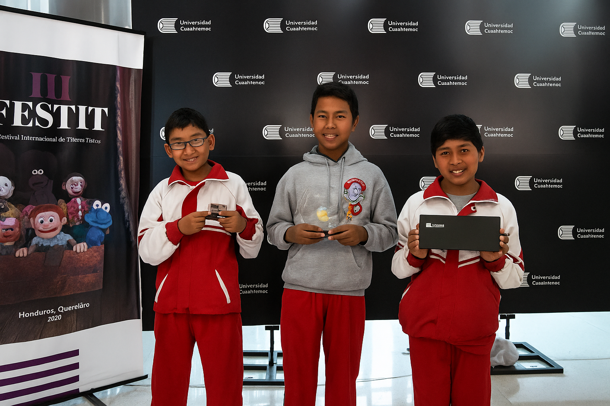
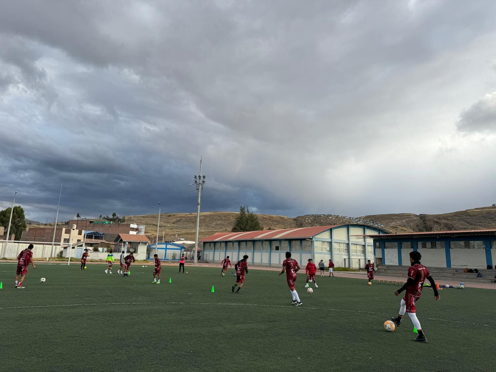
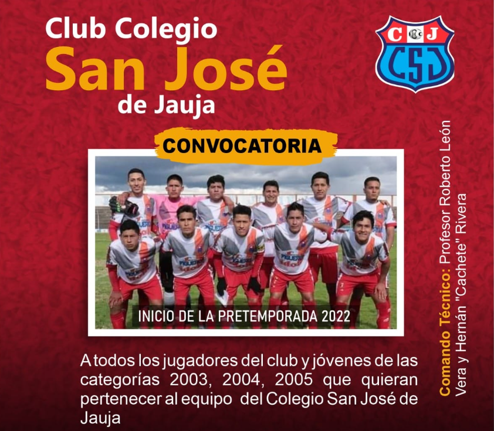

Excelencia Académica

El Colegio San José de Jauja se caracteriza por una cultura de aprendizaje exigente,
que impulsa a sus estudiantes a alcanzar niveles superiores de rendimiento académico.
A través de metodologías activas y participativas, se promueve el pensamiento crítico,
el análisis profundo y la investigación constante. El cuerpo docente está conformado por
profesionales altamente capacitados que brindan acompañamiento personalizado y fomentan el
desarrollo del potencial individual. Esta búsqueda permanente de la excelencia se ve
reflejada en los resultados sobresalientes obtenidos en evaluaciones regionales y nacionales,
así como en la sólida preparación para estudios superiores.

La propuesta educativa del colegio va más allá del conocimiento académico. San José de Jauja
apuesta por una educación que forma personas completas: capaces, éticas y comprometidas.
Mediante una currícula que incluye arte, deporte, ciencia y tecnología, se cultivan las habilidades
sociales, emocionales y ciudadanas. Se desarrollan talleres de liderazgo, proyectos de servicio social
y dinámicas que fortalecen el espíritu cooperativo. El objetivo es que cada estudiante construya una
identidad sólida, con autonomía, empatía y responsabilidad hacia su comunidad y el entorno.
Logros en Matemáticas

Uno de los pilares del colegio es su destacada enseñanza en matemáticas. San José de Jauja ha ganado
reconocimiento a nivel nacional por su participación constante y victorias en olimpiadas escolares,
competencias intercolegiales y ferias científicas. La institución implementa programas especiales de
entrenamiento lógico-matemático para alumnos con talento en esta área, además de grupos de estudio,
asesorías personalizadas y simulacros de alto nivel. Estos logros posicionan al colegio como referente
entre los centros educativos centenarios del Perú.
Actividades Culturales

La vida escolar en San José de Jauja se enriquece con una diversidad de eventos culturales que
celebran la identidad jaujina y fomentan la creatividad. Ferias de talentos, concursos literarios,
danzas tradicionales, recitales poéticos y exposiciones artísticas son parte del calendario anual.
Estas actividades permiten que los estudiantes exploren sus capacidades expresivas, fortalezcan el
vínculo con sus raíces y compartan su arte con la comunidad. Cada evento es una celebración del espíritu
cultural y artístico del colegio.
Deportes y Competencias

El colegio valora el deporte como herramienta de formación personal y social. San José de Jauja cuenta
con selecciones competitivas de fútbol, vóley, atletismo y otras disciplinas, que participan activamente
en torneos escolares regionales y nacionales. A través de los entrenamientos, los estudiantes desarrollan
habilidades físicas, pero también virtudes como la constancia, la disciplina, el trabajo en equipo y el
respeto. El deporte se vive como parte esencial de la formación integral, con espacios adecuados y entrenadores
comprometidos.
Talleres y Clubes

La oferta extracurricular del colegio incluye una amplia gama de talleres y clubes donde los alumnos exploran sus
intereses personales y vocaciones tempranas. Teatro, música, robótica, manualidades, escritura creativa, ciencias
aplicadas, idiomas, ajedrez y tecnología son solo algunas de las opciones. Estos espacios permiten que los
estudiantes refuercen habilidades específicas, trabajen en proyectos colaborativos y desarrollen pensamiento
innovador. Además, se crean ambientes de diálogo, respeto y camaradería que enriquecen la vida escolar.
Comunidad Josefina

El corazón del colegio lo conforman las personas que lo habitan día a día. San José de Jauja cultiva una comunidad
educativa activa y comprometida, donde los docentes, estudiantes, directivos y familias construyen juntos el ambiente
ideal para aprender y crecer. Se fomenta el diálogo continuo, el respeto mutuo y la participación en decisiones
institucionales. Las familias colaboran estrechamente en actividades, proyectos y celebraciones, mientras que
los docentes ejercen su labor con vocación y afecto. Ser parte de esta comunidad implica pertenecer a una red
solidaria que impulsa el desarrollo colectivo.
Bienestar Estudiantil

Cuidar el bienestar físico, emocional y psicológico del estudiante es una prioridad. El colegio desarrolla campañas de
salud preventiva, acompañamiento psicológico, charlas de orientación vocacional, talleres de inteligencia emocional
y jornadas de integración. Se trabaja en la construcción de una cultura de respeto, inclusión y escucha activa.
Los estudiantes cuentan con espacios seguros y profesionales capacitados que los apoyan en su desarrollo integral.
El bienestar es entendido como base para el aprendizaje y la convivencia.